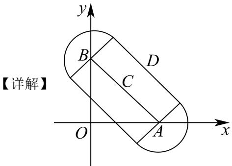
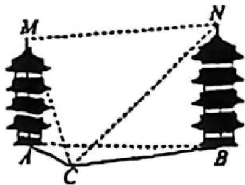
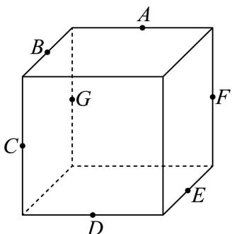
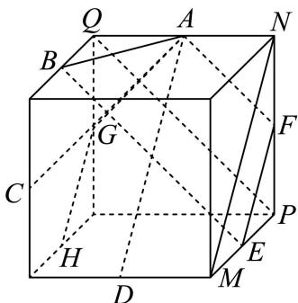
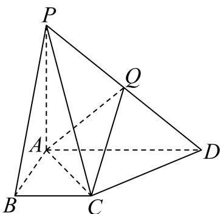
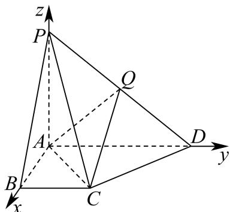
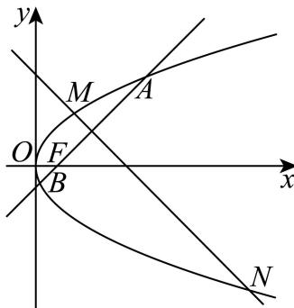

第 1 题集合 A=(0,+∞)A = (0, +\infty)A=(0,+∞) ，集合 B={−2,−1,0,1,2}B = \{-2, -1, 0, 1, 2\}B={−2,−1,0,1,2} ，则 A∩B=A \cap B =A∩B= ____. 展开答案与解析答案】 {1,2}\{1,2\}{1,2} 【解析】 【分析】由交集的定义运算. 【详解】由题意得， A∩B={1,2}A \cap B = \{1, 2\}A∩B={1,2} . 故答案为： {1,2}\{1,2\}{1,2} 第 2 题不等式 ∣x−2∣<1|x-2|<1∣x−2∣<1 的解集为 ____. 展开答案与解析【答案】(1,3) 【解析】 【分析】根据绝对值的意义即可求解. 【详解】由 ∣x−2∣<1|x-2|<1∣x−2∣<1 ， 得-1<x-2<1， 解得1<x<3， 即不等式的解集为 (1,3)(1,3)(1,3) , 故答案为：(1,3) 第 3 题在等差数列 {an}\left\{a_{n}\right\}{an} 中， a2=1a_{2}=1a2=1 ，公差 d=2d=2d=2， an=11a_{n}=11an=11 ，则 n=n=n= ____. 展开答案与解析【答案】7 【解析】 【分析】利用已知求得等差数列 {an}\{a_{n}\}{an} 的通项公式，进而求得 nnn ： 【详解】因为等差数列 {an}\{a_{n}\}{an} 中， a2=1a_2 = 1a2=1 ，公差 d=2d = 2d=2 所以数列 {an}\{a_{n}\}{an} 的通项公式 an=a2+(n−2)d=1+2(n−2)=2n−3a_{n} = a_{2} + (n - 2)d = 1 + 2(n - 2) = 2n - 3an=a2+(n−2)d=1+2(n−2)=2n−3 又 an=11a_{n} = 11an=11 ，所以 2n−3=112n - 3 = 112n−3=11 ，解得 n=7n = 7n=7 故答案为：7. 第 4 题在 (x−1)6(x-1)^{6}(x−1)6 的展开式中， x2x^{2}x2 项的系数为____。 展开答案与解析【答案】15 【解析】 【分析】利用二项展开式的通项公式求指定项的系数即可. 【详解】 (x−1)6(x-1)^{6}(x−1)6 二项展开式的通项公式为 Tr+1=C6rx6−r(−1)r=(−1)rC6rx6−rT_{r+1}=C_{6}^{r}x^{6-r}(-1)^{r}=(-1)^{r}C_{6}^{r}x^{6-r}Tr+1=C6rx6−r(−1)r=(−1)rC6rx6−r ， 令 6−r=26 - r = 26−r=2 ，可得 r=4r = 4r=4 所以， x2x^{2}x2 项的系数为 (−1)4C62=15(-1)^{4}C_{6}^{2}=15(−1)4C62=15 . 故答案为：15. 第 5 题如果圆锥的底面圆半径为 1，母线长为 2，则该圆锥的侧面积为 ____. 展开答案与解析【答案】 2π2\pi2π 【解析】 【分析】由圆锥的侧面积公式即可求解. 【详解】由圆锥的侧面积公式 S=12lR=12×(2πr)×R=12×2π×1×2=2π.S=\frac{1}{2}lR=\frac{1}{2}\times(2\pi r)\times R=\frac{1}{2}\times2\pi\times1\times2=2\pi.S=21lR=21×(2πr)×R=21×2π×1×2=2π. 故答案为： 2π2\pi2π 第 6 题设 a⃗=(2,3),b⃗=(1,0)\vec{a}=(2,3),\vec{b}=(1,0)a=(2,3),b=(1,0) ，则向量 a⃗\vec{a}a 在 b⃗\vec{b}b 方向上的投影向量的坐标为 ____. 展开答案与解析【答案】(2,0) 【解析】 【分析】先利用坐标计算 a⃗⋅b⃗\vec{a}\cdot\vec{b}a⋅b ， ∣b⃗∣\left|\vec{b}\right|b ，再利用公式 a⃗⋅b⃗∣b⃗∣2⋅b⃗\frac{\vec{a}\cdot\vec{b}}{\left|\vec{b}\right|^{2}}\cdot\vec{b}∣b∣2a⋅b⋅b 计算. 【详解】因 a⃗=(2,3),b⃗=(1,0)\vec{a} = (2,3),\vec{b} = (1,0)a=(2,3),b=(1,0) ，则 a⃗⋅b⃗=2\vec{a}\cdot \vec{b} = 2a⋅b=2 ， ∣b⃗∣=1|\vec{b}| = 1∣b∣=1 则向量 a⃗\vec{a}a 在 b⃗\vec{b}b 方向上的投影向量的坐标为 a⃗⋅b⃗∣b⃗∣2⋅b⃗=2b⃗=(2,0)\frac{\vec{a} \cdot \vec{b}}{|\vec{b}|^2} \cdot \vec{b} = 2\vec{b} = (2,0)∣b∣2a⋅b⋅b=2b=(2,0) . 故答案为： (2,0)(2,0)(2,0) 第 7 题已知 3x=23^{x} = 23x=2 ， y=log62y = \log_{6} 2y=log62 ，则 1x−1y=\frac{1}{x} - \frac{1}{y} =x1−y1= ____ 展开答案与解析【答案】-1 【解析】 【分析】由指对数的关系得 x=log32x = \log_{3} 2x=log32 ，再有 1x−1y=log23−log26\frac{1}{x} - \frac{1}{y} = \log_{2} 3 - \log_{2} 6x1−y1=log23−log26 ，即可求值. 【详解】由题设 x=log32x = \log_32x=log32 ， y=log62y = \log_62y=log62 根据换底公式，则 1x−1y=1log32−1log62=log23−log26=log212=−1.\frac{1}{x} -\frac{1}{y} = \frac{1}{\log_32} -\frac{1}{\log_62} = \log_23 - \log_26 = \log_2\frac{1}{2} = -1.x1−y1=log321−log621=log23−log26=log221=−1. 故答案为：-1 第 8 题函数 y=1x−1,x∈Dy=\frac{1}{x-1}, x \in Dy=x−11,x∈D 的值域为 (−1,0)∪(0,+∞)(-1,0) \cup (0,+\infty)(−1,0)∪(0,+∞) ，则集合 D=D=D= ____. 展开答案与解析【答案】 (−∞,0)∪(1,+∞)(-∞,0)∪(1,+∞)(−∞,0)∪(1,+∞) 【解析】 【分析】利用函数的值域求解不等式，进而得到函数的定义域即可. 【详解】令 1x−1∈(0,+∞)\frac{1}{x - 1} \in (0, +\infty)x−11∈(0,+∞) ，解得 x∈(1,+∞)x \in (1, +\infty)x∈(1,+∞) ， 令 1x−1∈(−1,0)\frac{1}{x-1}\in(-1,0)x−11∈(−1,0) ，解得 x∈(−∞,0)x\in(-\infty,0)x∈(−∞,0) ， 则集合 D=(−∞,0)∪(1,+∞)D = (-\infty, 0) \cup (1, +\infty)D=(−∞,0)∪(1,+∞) . 故答案为： (−∞,0)∪(1,+∞)(-\infty ,0)\cup (1, + \infty)(−∞,0)∪(1,+∞) 第 9 题已知 a,b,ca, b, ca,b,c 均为正实数，且 a(b+c)=1a(b + c) = 1a(b+c)=1 ，则 1a+1b+c+4a+b+c\frac{1}{a} + \frac{1}{b + c} + \frac{4}{a + b + c}a1+b+c1+a+b+c4 的最小值为 ____. 展开答案与解析【答案】4 【解析】 【分析】由 a(b+c)=1a(b + c) = 1a(b+c)=1 可得 b+c=1ab + c = \frac{1}{a}b+c=a1 ，所以原式可化为 1a+a+4a+1a\frac{1}{a} + a + \frac{4}{a + \frac{1}{a}}a1+a+a+a14 ①，令 t=a+1at = a + \frac{1}{a}t=a+a1 ，利用基本不等式求出 ttt 的范围，则①式可化为 y=t+4ty = t + \frac{4}{t}y=t+t4 ，再次利用基本不等式求出 yyy 的范围即可得解。（注意两次应用基本不等式，等号成立的条件必须相同） 【详解】由 a(b+c)=1a(b+c)=1a(b+c)=1 可得 b+c=1ab+c=\frac{1}{a}b+c=a1 ，所以原式 =1a+a+4a+1a=\frac{1}{a}+a+\frac{4}{a+\frac{1}{a}}=a1+a+a+a14 ①. 令 t=a+1at = a + \frac{1}{a}t=a+a1 ，当 a>0a > 0a>0 时， a+1a≥2a×1a=2a + \frac{1}{a}\geq 2\sqrt{a\times\frac{1}{a}} = 2a+a1≥2a×a1=2 当且仅当 a=1aa = \frac{1}{a}a=a1 ，即 a=1a = 1a=1 时等号成立，所以 t≥2t\geq 2t≥2 所以①式可化为原式 =t+4t= t + \frac{4}{t}=t+t4 令 y=t+4ty = t + \frac{4}{t}y=t+t4 ，则 t+4t≥2t×4t=4t + \frac{4}{t} \geq 2\sqrt{t \times \frac{4}{t}} = 4t+t4≥2t×t4=4 ， 当且仅当 t=4tt = \frac{4}{t}t=t4 ，即 t=2t = 2t=2 ，即 a=1a = 1a=1 时等号成立，所以 y≥4y \geq 4y≥4 所以 1a+1b+c+4a+b+c\frac{1}{a} +\frac{1}{b + c} +\frac{4}{a + b + c}a1+b+c1+a+b+c4 的最小值为4. 故答案为：4 第 10 题在复平面上, 复数 2 和 2i2 \mathrm{i}2i 所对应的点分别为 A、BA 、 BA、B , 复数 z1z_{1}z1 所对应的点在线段 ABA BAB 上移动, 若 ∣z1−z2∣=1\left| z_{1} - z_{2} \right| = 1∣z1−z2∣=1 , 则复数 z2z_{2}z2 对应点所构成图形的面积为 ____. 展开答案与解析【答案】 42+π4\sqrt{2}+\pi42+π 【解析】 【分析】设复数 z1z_{1}z1 所对应的点为 CCC ，设复数 z2z_{2}z2 所对应的点为 DDD ，由 ∣z1−z2∣=1\left|z_1 - z_2\right| = 1∣z1−z2∣=1 得到点 DDD 的轨迹为：以线段 ABABAB 为中线，宽度为2的矩形，加上两端 A,BA, BA,B 为圆心，半径为1的两个半圆，利用矩形和圆的面积公式求解即可.  ∵ 复数 2 和 2i 所对应的点分别为 A、B，∴ A(2,0)A(2,0)A(2,0) , B(0,2)B(0,2)B(0,2) , 设复数 z1z_{1}z1 所对应的点为 C，设复数 z2z_{2}z2 所对应的点为 D， ∵∣z1−z2∣=1,∴∣DC∣=1,∴\because \left|z_{1} - z_{2}\right| = 1, \therefore \left|DC\right| = 1, \therefore∵∣z1−z2∣=1,∴∣DC∣=1,∴ 点 DDD 轨迹是以点 CCC 为圆心，半径为1的圆， ∵ 点 C 在线段 AB 上移动，∴ 点 D 的轨迹为：以线段 AB 上的点为圆心，半径为 1 的圆的并集， 即点 D 的轨迹为：以线段 AB 为中线，宽度为 2 的矩形，加上两端 A, B 为圆心，半径为 1 的两个半圆， ∵A(2,0),B(0,2),∴∣AB∣=22,\because A(2,0),B(0,2), \therefore |AB| = 2\sqrt{2},∵A(2,0),B(0,2),∴∣AB∣=22, ∴ 复数 z2z_{2}z2 对应点所构成图形的面积为 22×2+π×12=42+π2\sqrt{2} \times 2 + \pi \times 1^{2} = 4\sqrt{2} + \pi22×2+π×12=42+π . 故答案为： 42+π4\sqrt{2}+\pi42+π . 第 11 题如图, 两塔的塔尖分别为 M、NM 、 NM、N , 塔底分别为 A、BA 、 BA、B , 塔身 MA、NBM A 、 N BMA、NB 均垂直水平面 ABCA B CABC . 已测得 CCC 与 A、BA 、 BA、B 的距离, 4 名同学分别测得如下 4 组数据:  ① ∠MCA\angle MCA∠MCA , ∠NCB\angle NCB∠NCB , ∠ACB\angle ACB∠ACB ; ② ∠MCA\angle MCA∠MCA , ∠ACB\angle ACB∠ACB , ∠MCN\angle MCN∠MCN ; ③ ∠MCA,∠NCB,∠MCN;\angle MCA, \angle NCB, \angle MCN;∠MCA,∠NCB,∠MCN; ④ ∠MCA,∠ACB,∠NCA.\angle MCA, \angle ACB, \angle NCA.∠MCA,∠ACB,∠NCA. 其中不能唯一确定 M 与 N 之间距离的数据的序号有 ______. 展开答案与解析【答案】④ 【解析】 【分析】将空间几何问题转化为确定塔高 h1h_{1}h1 与 h2h_{2}h2 的过程，对于每个数据组，首先判断能否由已知角度和已知边长唯一确定水平距离 AB 与两个塔高；若能，则两塔尖的空间坐标唯一确定，距离随之唯一确定，若给出的角度条件不足以唯一确定所有未知的塔高或位置，则存在多解，从而无法唯一确定两塔尖距离. 【详解】①: ∠MCA,∠NCB,∠ACB\angle MCA, \angle NCB, \angle ACB∠MCA,∠NCB,∠ACB ∠ACB\angle ACB∠ACB 与 CA, CB 的长度，用余弦定理确定 AB 唯一， ∠MCA\angle MCA∠MCA 与 CA 的值，在 Rt△MCARt_{\triangle MCA}Rt△MCA 中 MA=CA⋅tan∠MCAMA = CA \cdot \tan \angle MCAMA=CA⋅tan∠MCA 可确定 MA 唯一， ∠NCB\angle NCB∠NCB 与 CBCBCB 的值，在 Rt△NCB\mathbf{Rt}_{\triangle}NCBRt△NCB 中 NB=CB⋅tan∠NCBNB = CB \cdot \tan \angle NCBNB=CB⋅tan∠NCB 可确定 NBNBNB 唯一， 由 MN=AB2+(NB−MA)2MN = \sqrt{AB^2 + (NB - MA)^2}MN=AB2+(NB−MA)2 知 MNMNMN 唯一确定. ②: ∠MCA,∠ACB,∠MCN\angle MCA, \angle ACB, \angle MCN∠MCA,∠ACB,∠MCN ∠ACB\angle ACB∠ACB 与 CA, CB 的长度，用余弦定理确定 AB 唯一， ∠MCA\angle MCA∠MCA 与 CACACA 的值，在 Rt△MCA\mathbf{Rt}_{\triangle}MCARt△MCA 中 MA=CA⋅tan∠MCAMA = CA \cdot \tan \angle MCAMA=CA⋅tan∠MCA 可确定 MAMAMA 唯一， ∠MCN\angle MCN∠MCN 是点 CCC 处观测 MMM 与 NNN 的夹角， 在 △MCN\triangle MCN△MCN 中：边 CM=CA2+MA2CM = \sqrt{CA^2 + MA^2}CM=CA2+MA2 （已知） 边 CN=CB2+NB2CN = \sqrt{CB^2 + NB^2}CN=CB2+NB2 （含未知量 NBNBNB ） ∠MCN 已知 由余弦定理： MN2=CM2+CN2−2⋅CM⋅CN⋅cos∠MCNMN^2 = CM^2 +CN^2 -2\cdot CM\cdot CN\cdot \cos \angle MCNMN2=CM2+CN2−2⋅CM⋅CN⋅cos∠MCN 同时又有： MN2=AB2+(MA−NB)2MN^2 = AB^2 + (MA - NB)^2MN2=AB2+(MA−NB)2 联立 MN2MN^{2}MN2 的表达式，建立关于 NB 的方程， 因函数单调性及物理意义（塔高＞0），通常有且仅有一个正实数解 故可确定 MNMNMN 唯一. ③: ∠MCA,∠NCB,∠MCN\angle MCA, \angle NCB, \angle MCN∠MCA,∠NCB,∠MCN ∠MCA\angle MCA∠MCA 与 CA 的值，在 Rt△MCARt_{\triangle MCA}Rt△MCA 中 MA=CA⋅tan∠MCAMA = CA \cdot \tan \angle MCAMA=CA⋅tan∠MCA 可确定 MA 唯一， ∠NCB\angle NCB∠NCB 与 CBCBCB 的值，在 Rt△NCB\mathbf{Rt}_{\triangle}NCBRt△NCB 中 NB=CB⋅tan∠NCBNB = CB \cdot \tan \angle NCBNB=CB⋅tan∠NCB 可确定 NBNBNB 唯一， 由 MN2=CM2+CN2−2⋅CM⋅CN⋅cos∠MCNMN^{2}=CM^{2}+CN^{2}-2\cdot CM\cdot CN\cdot\cos\angle MCNMN2=CM2+CN2−2⋅CM⋅CN⋅cos∠MCN ，及 ∠MCN\angle MCN∠MCN 已知，可确定 MN 唯一. ④：由 ∠MCA,AC\angle MCA, AC∠MCA,AC 可求得 MA；再由 AC, BC, ∠ACB\angle ACB∠ACB ，可求得 AB； 而 (MN→)2=(MA→+AB→+BN→)2=∣MA→∣2+∣AB→∣2+∣BN→∣2−2∣MA→∣∣BN→∣\left(\overrightarrow{MN}\right)^2 = \left(\overrightarrow{MA} +\overrightarrow{AB} +\overrightarrow{BN}\right)^2 = \left|\overrightarrow{MA}\right|^2 +\left|\overrightarrow{AB}\right|^2 +\left|\overrightarrow{BN}\right|^2 -2\left|\overrightarrow{MA}\right|\left|\overrightarrow{BN}\right|(MN)2=(MA+AB+BN)2=MA2+AB2+BN2−2MABN 故 MNMNMN 长度不确定. 故答案为: ④ 第 12 题已知集合 Ω={w⃗∣w⃗=λe⃗1+μe⃗2+γe⃗3,λ,μ,γ∈{−1,1}}\Omega = \left\{\vec{w} \mid \vec{w} = \lambda \vec{e}_1 + \mu \vec{e}_2 + \gamma \vec{e}_3, \lambda, \mu, \gamma \in \{-1, 1\}\right\}Ω={w∣w=λe1+μe2+γe3,λ,μ,γ∈{−1,1}} ，若对于空间中任意单位向量 e⃗1,e⃗2,e⃗3\vec{e}_1, \vec{e}_2, \vec{e}_3e1,e2,e3 ，都存在 d⃗∈Ω\vec{d} \in \Omegad∈Ω ，使得 ∣d⃗∣≥r|\vec{d}| \geq r∣d∣≥r ，则实数 rrr 的最大值为 ____. 展开答案与解析【答案】 3\sqrt{3}3 【解析】 【分析】根据存在性问题分析可知 ∣d⃗∣max≥r\left|\vec{d}\right|_{\max} \geq rdmax≥r ，结合题意以及空间向量的数量积运算可得 ∣d⃗∣max=3+2cosα+2cosβ+2cosθ\left|\vec{d}\right|_{\max} = \sqrt{3 + 2\cos\alpha + 2\cos\beta + 2\cos\theta}dmax=3+2cosα+2cosβ+2cosθ ，结合任意性分析可知 (∣d⃗∣max)min≥r\left(\left|\vec{d}\right|_{\max}\right)_{\min} \geq r(dmax)min≥r ，进而分析求解. 【详解】若存在 d⃗∈Ω\vec{d} \in \Omegad∈Ω ，使得 ∣d⃗∣≥r|\vec{d}| \geq r∣d∣≥r ，则 ∣d⃗∣max≥r\left|\vec{d}\right|_{\max} \geq rdmax≥r ， 设 ⟨e1→,e2→⟩=α,⟨e2→,e3→⟩=β,⟨e1→,e3→⟩=θ\left\langle \overrightarrow{e_1},\overrightarrow{e_2}\right\rangle = \alpha ,\left\langle \overrightarrow{e_2},\overrightarrow{e_3}\right\rangle = \beta ,\left\langle \overrightarrow{e_1},\overrightarrow{e_3}\right\rangle = \theta⟨e1,e2⟩=α,⟨e2,e3⟩=β,⟨e1,e3⟩=θ ，且 α,β,θ∈[0,π]\alpha ,\beta ,\theta \in [0,\pi ]α,β,θ∈[0,π] 则 ∣e1→∣=∣e2→∣=∣e3→∣=1\left|\overrightarrow{e_1}\right| = \left|\overrightarrow{e_2}\right| = \left|\overrightarrow{e_3}\right| = 1e1=e2=e3=1 ， e⃗1⋅e⃗2=cosα,e⃗2⋅e⃗3=cosβ,e⃗1⋅e⃗3=cosθ\vec{e}_1\cdot \vec{e}_2 = \cos \alpha ,\vec{e}_2\cdot \vec{e}_3 = \cos \beta ,\vec{e}_1\cdot \vec{e}_3 = \cos \thetae1⋅e2=cosα,e2⋅e3=cosβ,e1⋅e3=cosθ 因为 d⃗∈Ω\vec{d} \in \Omegad∈Ω ，可设 d⃗=λe⃗1+μe⃗2+γe⃗3,λ,μ,γ∈{−1,1}\vec{d} = \lambda \vec{e}_1 + \mu \vec{e}_2 + \gamma \vec{e}_3, \lambda, \mu, \gamma \in \{-1, 1\}d=λe1+μe2+γe3,λ,μ,γ∈{−1,1} ， 则 d⃗2=(λe⃗1+μe⃗2+γe⃗3)2=λ2e⃗12+μ2e⃗22+γ2e⃗32+2λμe⃗1⋅e⃗2+2μγe⃗2⋅e⃗3+2λγe⃗1⋅e⃗3\vec{d}^2 = (\lambda \vec{e}_1 + \mu \vec{e}_2 + \gamma \vec{e}_3)^2 = \lambda^2\vec{e}_1^2 +\mu^2\vec{e}_2^2 +\gamma^2\vec{e}_3^2 +2\lambda \mu \vec{e}_1\cdot \vec{e}_2 + 2\mu \gamma \vec{e}_2\cdot \vec{e}_3 + 2\lambda \gamma \vec{e}_1\cdot \vec{e}_3d2=(λe1+μe2+γe3)2=λ2e12+μ2e22+γ2e32+2λμe1⋅e2+2μγe2⋅e3+2λγe1⋅e3 =3+2λμcosα+2μγcosβ+2λγcosθ,= 3 + 2\lambda \mu \cos \alpha +2\mu \gamma \cos \beta +2\lambda \gamma \cos \theta ,=3+2λμcosα+2μγcosβ+2λγcosθ, 因为 λμ,μγ,λγ∈{−1,1}\lambda \mu, \mu \gamma, \lambda \gamma \in \{-1, 1\}λμ,μγ,λγ∈{−1,1} , cosα,cosβ,cosθ∈[−1,1]\cos \alpha, \cos \beta, \cos \theta \in [-1, 1]cosα,cosβ,cosθ∈[−1,1] , 注意到符号性不妨设 α,β,θ∈[0,π2]\alpha, \beta, \theta \in \left[0, \frac{\pi}{2}\right]α,β,θ∈[0,2π] ，则 cosα,cosβ,cosθ∈[0,1]\cos \alpha, \cos \beta, \cos \theta \in [0,1]cosα,cosβ,cosθ∈[0,1] ， 可得 d⃗2=3+2λμcosα+2μγcosβ+2λγcosθ≤3+2cosα+2cosβ+2cosθ\vec{d}^2 = 3 + 2\lambda \mu \cos \alpha + 2\mu \gamma \cos \beta + 2\lambda \gamma \cos \theta \leq 3 + 2\cos \alpha + 2\cos \beta + 2\cos \thetad2=3+2λμcosα+2μγcosβ+2λγcosθ≤3+2cosα+2cosβ+2cosθ 当且仅当 λμ=μγ=λγ=1\lambda \mu = \mu \gamma = \lambda \gamma = 1λμ=μγ=λγ=1 时，等号成立， 可知 ∣d⃗∣max=3+2cosα+2cosβ+2cosθ\left|\vec{d}\right|_{\max}=\sqrt{3+2\cos\alpha+2\cos\beta+2\cos\theta}dmax=3+2cosα+2cosβ+2cosθ 又因为对于空间中任意单位向量 e1→,e2→,e3→\overrightarrow{e_1},\overrightarrow{e_2},\overrightarrow{e_3}e1,e2,e3 ，都存在 d⃗∈Ω\vec{d}\in \Omegad∈Ω ，使得 ∣d⃗∣≥r\left|\vec{d}\right|\geq rd≥r 则 (∣d⃗∣max)min≥r\left(\left|\vec{d}\right|_{\max}\right)_{\min} \geq r(dmax)min≥r ，即 (3+2cosα+2cosβ+2cosθ)min≥r\left(\sqrt{3 + 2\cos\alpha + 2\cos\beta + 2\cos\theta}\right)_{\min} \geq r(3+2cosα+2cosβ+2cosθ)min≥r 且 cosα,cosβ,cosθ∈[0,1]\cos \alpha, \cos \beta, \cos \theta \in [0,1]cosα,cosβ,cosθ∈[0,1] ，可得 3+2cosα+2cosβ+2cosθ≥3\sqrt{3 + 2\cos\alpha + 2\cos\beta + 2\cos\theta} \geq \sqrt{3}3+2cosα+2cosβ+2cosθ≥3 ， 当且仅当 cosα=cosβ=cosθ=0\cos\alpha=\cos\beta=\cos\theta=0cosα=cosβ=cosθ=0 时，等号成立，即 (∣d⃗∣max)min=3\left(\left|\vec{d}\right|_{\max}\right)_{\min}=\sqrt{3}(dmax)min=3 可得 r≤3r \leq \sqrt{3}r≤3 ，所以实数 rrr 的最大值为 3\sqrt{3}3 . 故答案为： 3\sqrt{3}3 第 13 题如图, 已知 A、B、C、D、E、F、GA 、 B 、 C 、 D 、 E 、 F 、 GA、B、C、D、E、F、G 分别是正方体所在棱的中点, 则下列直线中与直线 EFE FEF 异面的是 ( )  A. 直线 ABABAB B. 直线 ACACAC C. 直线 ADADAD D. 直线 AGAGAG 展开答案与解析【答案】BD 【解析】 【分析】本题考查正方体的结构特征，利用异面直线的判断法若 a⊂α,AB∩α=B,A∉α,B∉aa \subset \alpha, AB \cap \alpha = B, A \notin \alpha, B \notin aa⊂α,AB∩α=B,A∈/α,B∈/a 则直线 ABABAB 与 aaa 互为异面直线依次分析选项即可 【详解】如图取中点 H, 和顶点 M, N, P, Q 连接 EF, AB, AC, AD, AG, BE, AF, GH, MN, PQ在正方体中有 AF//PQ,PQ//BEAF // PQ, PQ // BEAF//PQ,PQ//BE ，所以 AF//BEAF // BEAF//BE ，所以点 A,B,E,FA, B, E, FA,B,E,F 四点共面，所以直线 EFEFEF 与直线 ABABAB 共面，选项 A 不对； 直线 GH⊂GH \subsetGH⊂ 平面 BCGBCGBCG ，直线 AC∩AC \capAC∩ 平面 BCG=C,C∉GHBCG = C, C \notin GHBCG=C,C∈/GH ，所以直线 GHGHGH 与直线 ACACAC 是异面直线，又因为 EF//GHEF // GHEF//GH ，所以直线 EFEFEF 与直线 ACACAC 是异面直线，选项 B 正确； 在正方体中有 EF//MN,MN//ADEF // MN, MN // ADEF//MN,MN//AD ，所以 EF//ADEF // ADEF//AD ，选项 C 不对； 直线 AG⊂AG \subsetAG⊂ 平面 AFGAFGAFG ，直线 EF∩EF \capEF∩ 平面 AFG=F,F∉AGAFG = F, F \notin AGAFG=F,F∈/AG ，所以直线 AGAGAG 与直线 EFEFEF 是异面直线，选项 D 正确； 故选：BD  A. 充分不必要条件 B. 必要不充分条件 C. 充要条件 D. 既不充分也不必要条件 【解析】 【分析】由独立事件概率公式和充要条件的概念即可求解. 【详解】由甲、乙两人投篮的命中率分别为 0.7 和 0.6， 若“事件 A,BA, BA,B 互相独立”，则 P(AB)=P(A)P(B)=0.42P(AB) = P(A)P(B) = 0.42P(AB)=P(A)P(B)=0.42 ， 若 P(AB)=0.42=P(A)P(B)P(AB) = 0.42 = P(A)P(B)P(AB)=0.42=P(A)P(B) ，则事件 A,BA, BA,B 互相独立， 即“甲、乙两人均投中的概率为0.42”是“事件 A,BA, BA,B 互相独立”的充要条件，故选：C 第 14 题规范稿漏第14题，采用MinerU原稿；未核PDF 甲、乙两人投篮的命中率分别为 0.7 和 0.6，两人各投篮一次，事件 A 为甲投中，事件 B 为乙投中。“甲、乙两人均投中的概率为 0.42”是“事件 A, B 互相独立”的（） A. 充分不必要条件 B. 必要不充分条件 C. 充要条件 D. 既不充分也不必要条件 展开答案与解析【解析】 【分析】由独立事件概率公式和充要条件的概念即可求解. 【详解】由甲、乙两人投篮的命中率分别为 0.7 和 0.6， 若“事件 A,BA, BA,B 互相独立”，则 P(AB)=P(A)P(B)=0.42P(AB) = P(A)P(B) = 0.42P(AB)=P(A)P(B)=0.42 ， 若 P(AB)=0.42=P(A)P(B)P(AB) = 0.42 = P(A)P(B)P(AB)=0.42=P(A)P(B) ，则事件 A,BA, BA,B 互相独立， 即“甲、乙两人均投中的概率为0.42”是“事件 A,BA, BA,B 互相独立”的充要条件，故选：C 第 15 题已知 A(−2,0),B(2,0)A(-2,0), B(2,0)A(−2,0),B(2,0) ，若曲线 (xa+yb)(xa−yb)=0(a>0,b>0)\left(\frac{x}{a} + \frac{y}{b}\right)\left(\frac{x}{a} - \frac{y}{b}\right) = 0 (a > 0, b > 0)(ax+by)(ax−by)=0(a>0,b>0) 上存在点 PPP 满足： ∣PB∣=∣PA∣+2\left|PB\right| = \left|PA\right| + 2∣PB∣=∣PA∣+2 ，则 ba\frac{b}{a}ab 的取值范围是（ ） A. (0,3)(0,\sqrt{3})(0,3) B. (3,+∞)(\sqrt{3}, + \infty)(3,+∞) C. (0,33)\left(0,\frac{\sqrt{3}}{3}\right)(0,33) D. (33,+∞) \left(\frac {\sqrt {3}}{3}, + \infty\right) (33,+∞) 展开答案与解析【答案】A 【解析】 【分析】根据双曲线的定义及直线与双曲线相交求解 ba\frac{b}{a}ab 的取值范围. 【详解】由 A(−2,0)A(-2,0)A(−2,0) ， B(2,0)B(2,0)B(2,0) 知， ∣AB∣=4|AB|=4∣AB∣=4 . 因为点 PPP 满足： ∣PB∣=∣PA∣+2\left|PB\right| = \left|PA\right| + 2∣PB∣=∣PA∣+2 ，即 ∣PB∣−∣PA∣=2\left|PB\right| - \left|PA\right| = 2∣PB∣−∣PA∣=2 ，且 ∣PB∣−∣PA∣<∣AB∣\left|PB\right| - \left|PA\right| < \left|AB\right|∣PB∣−∣PA∣<∣AB∣ 所以点 P 在以 A, B 为焦点的双曲线的左支上，设其方程为 x2a′2−y2b′2=1(x<0)\frac{x^{2}}{a'^{2}} - \frac{y^{2}}{b'^{2}} = 1 (x < 0)a′2x2−b′2y2=1(x<0) , 2c=4 2 c = 4 2c=4 2a′=2 2 a ^ {\prime} = 2 2a′=2 c=2,a′=1 c = 2, a ^ {\prime} = 1 c=2,a′=1 b2=c2−a2=3 b ^ {2} = c ^ {2} - a ^ {2} = 3 b2=c2−a2=3 所以点 PPP 在双曲线 x2−y23=1x^{2} - \frac{y^{2}}{3} = 1x2−3y2=1 的左支上，其渐近线方程为 y=±3xy = \pm \sqrt{3} xy=±3x 由曲线方程 (xa+yb)(xa−yb)=0(a>0,b>0)\left(\frac{x}{a} +\frac{y}{b}\right)\left(\frac{x}{a} -\frac{y}{b}\right) = 0(a > 0,b > 0)(ax+by)(ax−by)=0(a>0,b>0) 得 y=±baxy = \pm \frac{b}{a} xy=±abx 因为曲线 (xa+yb)(xa−yb)=0(a>0,b>0)\left(\frac{x}{a} +\frac{y}{b}\right)\left(\frac{x}{a} -\frac{y}{b}\right) = 0(a > 0,b > 0)(ax+by)(ax−by)=0(a>0,b>0) 上存在点 PPP 满足： ∣PB∣=∣PA∣+2\left|PB\right| = \left|PA\right| + 2∣PB∣=∣PA∣+2 所以直线 y=±baxy = \pm \frac{b}{a} xy=±abx 与双曲线 x2−y23=1x^{2} - \frac{y^{2}}{3} = 1x2−3y2=1 的左支有交点，所以 0<ba<30 < \frac{b}{a} < \sqrt{3}0<ab<3 . 故选：A. 第 16 题将正整数 1∼101 \sim 101∼10 按一定次序排列得到排列 a1,a2,⋯ ,a10a_{1}, a_{2}, \cdots, a_{10}a1,a2,⋯,a10 , 若排列 a1,a2,⋯ ,a10a_{1}, a_{2}, \cdots, a_{10}a1,a2,⋯,a10 中的任意一项 ai(1≤i≤10)a_{i} (1 \leq i \leq 10)ai(1≤i≤10) 都满足: −1≤ai−i≤1-1 \leq a_{i} - i \leq 1−1≤ai−i≤1 , 则满足题意的排列 a1,a2,⋯ ,a10a_{1}, a_{2}, \cdots, a_{10}a1,a2,⋯,a10 的个数为( ) A. 36 B. 55 C. 89 D. 144 展开答案与解析【答案】A 【解析】 【分析】设 1,2,3,⋯ ,n1,2,3,\cdots,n1,2,3,⋯,n 满足题意的排列个数为 TnT_{n}Tn ，将排列按照 a1=1a_{1}=1a1=1 与 a1=2a_{1}=2a1=2 两种情况分类，可得 Tn=Tn−1+Tn−2T_{n}=T_{n-1}+T_{n-2}Tn=Tn−1+Tn−2 ，据此可得答案. 【详解】设 1,2,3,⋯ ,n1,2,3,\cdots,n1,2,3,⋯,n 满足题意的排列个数为 TnT_{n}Tn ，本题所求为 T10T_{10}T10 。 由题可得 1≤a1≤21\leq a_{1}\leq21≤a1≤2 ， i−1≤ai≤i+1(2≤i≤n−1,i∈N∗)i-1\leq a_{i}\leq i+1(2\leq i\leq n-1, i\in\mathbb{N}^{*})i−1≤ai≤i+1(2≤i≤n−1,i∈N∗) ， n−1≤an≤nn-1\leq a_{n}\leq nn−1≤an≤n 。 当 a1=1a_{1}=1a1=1 ，此时 2≤a2≤32\leq a_{2}\leq32≤a2≤3 ， i−1≤ai≤i+1(3≤i≤n−1,i∈N∗)i-1\leq a_{i}\leq i+1(3\leq i\leq n-1, i\in\mathbb{N}^{*})i−1≤ai≤i+1(3≤i≤n−1,i∈N∗) ， n−1≤an≤nn-1\leq a_{n}\leq nn−1≤an≤n ，则 1,2,3,⋯ ,n1,2,3,\cdots,n1,2,3,⋯,n 满足题意的排列个数为 Tn−1(n≥2,n∈N∗)T_{n-1}(n\geq2, n\in\mathbb{N}^{*})Tn−1(n≥2,n∈N∗) ； 当 a1=2a_{1}=2a1=2 ， a2=1a_{2}=1a2=1 ，此时 3≤a3≤43\leq a_{3}\leq43≤a3≤4 ， i−1≤ai≤i+1(4≤i≤n−1,i∈N∗)i-1\leq a_{i}\leq i+1(4\leq i\leq n-1, i\in\mathbb{N}^{*})i−1≤ai≤i+1(4≤i≤n−1,i∈N∗) ， n−1≤an≤nn-1\leq a_{n}\leq nn−1≤an≤n ，则 1,2,3,⋯ ,n1,2,3,\cdots,n1,2,3,⋯,n 满足题意的排列个数为 Tn−2(n≥3,n∈N∗)T_{n-2}(n\geq3, n\in\mathbb{N}^{*})Tn−2(n≥3,n∈N∗) ； 当 a1=2a_{1}=2a1=2 ， a2=3a_{2}=3a2=3 ，则 a3=4a_{3}=4a3=4 ， a4=5a_{4}=5a4=5 ， ⋯\cdots⋯ ， an−2=n−1a_{n-2}=n-1an−2=n−1 ， an−1=na_{n-1}=nan−1=n ，此时没有整数使 ana_{n}an 满足题意，即当 a1=2a_{1}=2a1=2 ， a2=3a_{2}=3a2=3 时，满足题意的排列不存在。 综上可得， Tn=Tn−1+Tn−2(n≥3,n∈N∗)T_{n}=T_{n-1}+T_{n-2}(n\geq3, n\in\mathbb{N}^{*})Tn=Tn−1+Tn−2(n≥3,n∈N∗) 。 注意到 T1=1T_{1}=1T1=1 ， T2=2T_{2}=2T2=2 ，则 T3=1+2=3T_{3}=1+2=3T3=1+2=3 ， T4=2+3=5T_{4}=2+3=5T4=2+3=5 ， T5=3+5=8T_{5}=3+5=8T5=3+5=8 ， T6=5+8=13T_{6}=5+8=13T6=5+8=13 ， T7=8+13=21T_{7}=8+13=21T7=8+13=21 ， T8=13+21=34T_{8}=13+21=34T8=13+21=34 ， T9=21+34=55T_{9}=21+34=55T9=21+34=55 ， T10=34+55=89T_{10}=34+55=89T10=34+55=89 。 故选：C 第 17 题题目数据依据长宁一模解析版原卷补齐；未对整卷逐题终审。 小明有自觉体锻的习惯，某运动软件记录了其每天运动的时长（单位：min），小明从最近90天的记录中随机选取了10天的记录，具体数据如下： 68、34、70、45、74、126、108、66、36、72. (1) 求这组数据的第 60 百分位数: （2）运动时长不超过 60min 为不达标，估算从 90 天记录中随机抽取 1 天，该天运动时长不达标的概率： (3)从这10个数中随机删除2个数得到一组新的数据,求前后两组数据的极差相同的概率. 展开答案与解析【答案】(1) 71; (2) 0.3; 2845 \begin{array}{c} \frac {2 8}{4 5} \end{array} 4528 【解析】 【分析】（1）根据计算百分位数的步骤求解； （2）计算样本频率，利用频率估计概率； （3）根据古典概型的概率公式计算. 【小问1详解】 把 10 天的记录按照从小到大排列为：34,36,45,66,68,70,72,74,108,126， 因为 10×60%=610 \times 60\% = 610×60%=6 是整数，所以第60百分位数为第6个数与第7个数的平均数， 因为 70+722=71\frac{70 + 72}{2} = 71270+72=71 ，这组数据的第60百分位数为71； 【小问 2 详解】 因为选取的样本中运动时长不达标的频率为 310=0.3\frac{3}{10}=0.3103=0.3 ， 所以估计该天运动时长不达标的概率为 0.3; 【小问3详解】 因为前后两组数据的极差相同，所以随机删除的 2 个数为 36,45,66,68,70,72,74,108 中的两个， 则概率 P=C82C102=2845P=\frac{C_{8}^{2}}{C_{10}^{2}}=\frac{28}{45}P=C102C82=4528 第 18 题已知函数 f(x)=cosωx(ω>0)f(x) = \cos \omega x (\omega > 0)f(x)=cosωx(ω>0) . （1）若函数 y=f(x)y = f(x)y=f(x) 的最小正周期为 π\piπ ，求 ω\omegaω 的值及 y=f(x)y = f(x)y=f(x) 的单调递减区间； （2）设 ω=1\omega = 1ω=1 ， g(x)=f(2x)−2f(x)f(x+π2)g(x) = f(2x) - 2f(x)f\left(x + \frac{\pi}{2}\right)g(x)=f(2x)−2f(x)f(x+2π) ，求函数 y=g(x)y = g(x)y=g(x) 在区间 [0,π2]\left[0,\frac{\pi}{2}\right][0,2π] 上的值域. 展开答案与解析【答案】（1）2； [kπ,π2+kπ],k∈Z.\left[k\pi,\frac{\pi}{2}+k\pi\right],k\in\mathbf{Z}.[kπ,2π+kπ],k∈Z. (2) [−1,2]\left[-1, \sqrt{2}\right][−1,2] . 【解析】 【分析】（1）根据余弦型函数的最小正周期公式求得 ω\omegaω 的值，得到 f(x)f(x)f(x) 的解析式，进而由整体法求得单调递减区间； （2）首先化简得到 g(x)g(x)g(x) 的解析式，再由 x 的范围求得 g(x)g(x)g(x) 的值域. 【小问 1 详解】 因为函数 f(x)=cosωx(ω>0)f(x) = \cos \omega x(\omega >0)f(x)=cosωx(ω>0) 的最小正周期为 π\piπ 所以 T=2πω=πT=\frac{2\pi}{\omega}=\piT=ω2π=π ，解得 ω=2\omega=2ω=2 。 所以 f(x)=cos2xf(x)=\cos2xf(x)=cos2x . 要求 f(x)f(x)f(x) 的单调递减区间，令 2kπ≤2x≤π+2kπ,k∈Z2k\pi \leq 2x \leq \pi + 2k\pi, k \in Z2kπ≤2x≤π+2kπ,k∈Z , 解得 kπ≤x≤π2+kπ,k∈Zk\pi \leq x \leq \frac{\pi}{2} + k\pi, k \in \mathbf{Z}kπ≤x≤2π+kπ,k∈Z ，即 y=f(x)y = f(x)y=f(x) 的单调递减区间为 [kπ,π2+kπ],k∈Z\left[k\pi, \frac{\pi}{2} + k\pi\right], k \in \mathbf{Z}[kπ,2π+kπ],k∈Z . 【小问 2 详解】 因为 ω=1\omega=1ω=1 ，所以 f(x)=cosxf(x)=\cos xf(x)=cosx ， 所以 g(x)=f(2x)−2f(x)f(x+π2)=cos2x−2cosxcos(x+π2)=cos2x−2cosx(−sinx)=cos2x+sin2x=2sin(2x+π4). \begin{array}{l} g (x) = f (2 x) - 2 f (x) f \left(x + \frac {\pi}{2}\right) \\ = \cos 2 x - 2 \cos x \cos \left(x + \frac {\pi}{2}\right) = \cos 2 x - 2 \cos x (- \sin x) = \cos 2 x + \sin 2 x \\ = \sqrt {2} \sin \left(2 x + \frac {\pi}{4}\right). \end{array} g(x)=f(2x)−2f(x)f(x+2π)=cos2x−2cosxcos(x+2π)=cos2x−2cosx(−sinx)=cos2x+sin2x=2sin(2x+4π). 由 0≤x≤π20 \leq x \leq \frac{\pi}{2}0≤x≤2π 得 π4≤2x+π4≤5π4\frac{\pi}{4} \leq 2x + \frac{\pi}{4} \leq \frac{5\pi}{4}4π≤2x+4π≤45π , 由正弦函数的性质可得 −22≤sin(2x+π4)≤1-\frac{\sqrt{2}}{2} \leq \sin \left( 2x + \frac{\pi}{4} \right) \leq 1−22≤sin(2x+4π)≤1 ，所以 −1≤g(x)≤2-1 \leq g(x) \leq \sqrt{2}−1≤g(x)≤2 ， 所以函数 y=g(x)y = g(x)y=g(x) 在区间 [0,π2]\left[0, \frac{\pi}{2}\right][0,2π] 上的值域为 [−1,2]\left[-1, \sqrt{2}\right][−1,2] . 第 19 题如图，在四棱锥 P−ABCDP - ABCDP−ABCD 中， PA⊥PA \perpPA⊥ 平面 ABCDABCDABCD ， AB⊥ADAB \perp ADAB⊥AD ， AD//BCAD // BCAD//BC ， AB=BC=1AB = BC = 1AB=BC=1 ， AD=2AD = 2AD=2 ，直线 PCPCPC 与平面 ABCDABCDABCD 所成的角的大小为 arctan2\arctan\sqrt{2}arctan2 .  （1）求四棱锥 P-ABCD 的体积； (2) 点 QQQ 在线段 PDPDPD 上, 直线 PB//PB //PB// 平面 AQCAQCAQC , 求二面角 Q−AC−DQ - AC - DQ−AC−D 的余弦值. 展开答案与解析【答案】(1) 1 (2) 13\frac{1}{3}31 【解析】 【分析】（1）根据棱锥的体积公式，结合线面角的定义进行求解即可； （2）建立空间直角坐标系，利用线面平行的性质、空间向量夹角公式进行求解即可. 【小问 1 详解】 因为 AB⊥ADAB \perp ADAB⊥AD ，AD // BC， 所以 AB⊥BCAB \perp BCAB⊥BC ，因此 AC=AB2+BC2=1+1=2AC = \sqrt{AB^2 + BC^2} = \sqrt{1 + 1} = \sqrt{2}AC=AB2+BC2=1+1=2 ， 因为 PA⊥PA \perpPA⊥ 平面 ABCD，直线 PC 与平面 ABCD 所成的角的大小为 arctan2\arctan\sqrt{2}arctan2 ， 所以 tan(arctan2)=PAAC⇒PA=2×2=2\tan \left(\arctan \sqrt{2}\right) = \frac{PA}{AC} \Rightarrow PA = \sqrt{2} \times \sqrt{2} = 2tan(arctan2)=ACPA⇒PA=2×2=2 ， 四棱锥 P-ABCD 的体积为 13⋅PA⋅(BC+AD)2⋅AB=13×2×(1+2)2×1=1\frac{1}{3}\cdot PA\cdot\frac{(BC+AD)}{2}\cdot AB=\frac{1}{3}\times2\times\frac{(1+2)}{2}\times1=131⋅PA⋅2(BC+AD)⋅AB=31×2×2(1+2)×1=1 ; 【小问 2 详解】 因为 PA⊥PA \perpPA⊥ 平面 ABCD，AB, AD ⊂ 平面 ABCD, 所以 PA⊥ABPA \perp ABPA⊥AB ， PA⊥ADPA \perp ADPA⊥AD ，又因为 AB⊥ADAB \perp ADAB⊥AD ， 所以可以建立如图所示的空间直角坐标系， A(0,0,0),B(1,0,0),C(1,1,0),D(0,2,0),P(0,0,2)A(0,0,0),B(1,0,0),C(1,1,0),D(0,2,0),P(0,0,2)A(0,0,0),B(1,0,0),C(1,1,0),D(0,2,0),P(0,0,2) 显然平面 ACD 的法向量为 AP→=(0,0,2)\overrightarrow{AP} = (0, 0, 2)AP=(0,0,2) , 因为点 QQQ 在线段 PDPDPD 上，所以设 PQ→=λPD→⇒PA→+AQ→=λ(0,2,−2)(λ∈[0,1])⇒(0,0,−2)+AQ→=(0,2λ,−2λ)\overrightarrow{PQ} = \lambda \overrightarrow{PD} \Rightarrow \overrightarrow{PA} + \overrightarrow{AQ} = \lambda (0,2, - 2)(\lambda \in [0,1]) \Rightarrow (0,0, - 2) + \overrightarrow{AQ} = (0,2\lambda , - 2\lambda)PQ=λPD⇒PA+AQ=λ(0,2,−2)(λ∈[0,1])⇒(0,0,−2)+AQ=(0,2λ,−2λ) ⇒AQ→=(0,2λ,2−2λ)\Rightarrow \overrightarrow{AQ} = (0,2\lambda ,2 - 2\lambda)⇒AQ=(0,2λ,2−2λ) , 设平面 AQCAQCAQC 的法向量为 m⃗=(x,y,z)\vec{m} = (x,y,z)m=(x,y,z) ，又 AC→=(1,1,0)\overrightarrow{AC} = (1,1,0)AC=(1,1,0) ， PB→=(1,0,−2)\overrightarrow{PB} = (1,0,-2)PB=(1,0,−2) ， 因为直线 PB∩PB \capPB∩ 平面 ABCD = B， 所以当直线 PB//PB //PB// 平面 AQCAQCAQC ，显然点 QQQ 不与点 DDD 重合， 则当 λ∈[0,1)\lambda \in [0,1)λ∈[0,1) 时， {m⃗⋅AQ→=0m⃗⋅AC→=0⇒{2λy+(2−2λ)z=0x+y=0\left\{ \begin{array}{l} \vec{m}\cdot \overrightarrow{AQ} = 0\\ \vec{m}\cdot \overrightarrow{AC} = 0 \end{array} \right.\Rightarrow \left\{ \begin{array}{l} 2\lambda y + (2 - 2\lambda)z = 0\\ x + y = 0 \end{array} \right.{m⋅AQ=0m⋅AC=0⇒{2λy+(2−2λ)z=0x+y=0 ，取 m⃗=(1,−1,λ1−λ)\vec{m} = \left(1, - 1,\frac{\lambda}{1 - \lambda}\right)m=(1,−1,1−λλ) 因为直线 PB//PB //PB// 平面 AQCAQCAQC ， 所以 PB→⋅m→=0⇒1−2λ1−λ=0⇒λ=13\overrightarrow{PB}\cdot\overrightarrow{m}=0\Rightarrow1-\frac{2\lambda}{1-\lambda}=0\Rightarrow\lambda=\frac{1}{3}PB⋅m=0⇒1−1−λ2λ=0⇒λ=31 ，即 m⃗=(1,−1,12)\vec{m}=\left(1,-1,\frac{1}{2}\right)m=(1,−1,21) , cosm⃗,AP→=m⃗⋅AP→∣m⃗∣⋅∣AP→∣=112+(−1)2+(12)2×2=13, \cos \vec {m}, \overrightarrow {A P} = \frac {\vec {m} \cdot \overrightarrow {A P}}{| \vec {m} | \cdot | \overrightarrow {A P} |} = \frac {1}{\sqrt {1 ^ {2} + (- 1) ^ {2} + \left(\frac {1}{2}\right) ^ {2}} \times 2} = \frac {1}{3}, cosm,AP=∣m∣⋅∣AP∣m⋅AP=12+(−1)2+(21)2×21=31, 由图可知二面角 Q−AC−DQ - AC - DQ−AC−D 是锐二面角， 所以二面角 Q−AC−DQ - AC - DQ−AC−D 的余弦值为 13\frac{1}{3}31 .  第 20 题已知抛物线 Γ:y2=4x\Gamma: y^{2} = 4xΓ:y2=4x 的焦点为 F，经过点 F 的直线 l 与抛物线 Γ\GammaΓ 交于 A、B 两点. （1）设 ∣AF∣=5|AF|=5∣AF∣=5 ，求点A的横坐标； （2）设 OOO 为坐标原点，线段 ABABAB 中点的纵坐标为 32\frac{3}{2}23 ，求 △OAB\triangle OAB△OAB 的面积； （3）设线段 ABABAB 的垂直平分线与抛物线 Γ\GammaΓ 交于点 MMM 、 NNN ，若以线段 MNMNMN 为直径的圆经过点 AAA 、 BBB ，求直线 lll 的方程. 展开答案与解析【答案】(1) 4 (2) 52\frac{5}{2}25 (3) x=±y+1x = \pm y + 1x=±y+1 【解析】 【分析】（1）根据抛物线的定义及 ∣AF∣=5\left|AF\right|=5∣AF∣=5 ，求出 x1=4x_{1}=4x1=4 ； （2）设 A(x1,y1),B(x2,y2)A(x_{1},y_{1}),B(x_{2},y_{2})A(x1,y1),B(x2,y2) ，设直线 lll 的直线方程为 x=my+1x = my + 1x=my+1 ，与抛物线方程联立，根据韦达定理得到 y1+y2=4my_{1} + y_{2} = 4my1+y2=4m ， y1y2=−4y_{1}y_{2} = -4y1y2=−4 ，再根据中点的纵坐标为 32\frac{3}{2}23 ，可解得结果； （2）设 MN:y−2m=−m(x−2m2−1)MN:y - 2m = -m(x - 2m^2 -1)MN:y−2m=−m(x−2m2−1) ， M(x3,y3),N(x4,y4)M(x_{3},y_{3}),N(x_{4},y_{4})M(x3,y3),N(x4,y4) ，求出 y3+y4=−4m y3y4=−8m2−12y_{3}+y_{4}=-\frac{4}{m}\ y_{3}y_{4}=-8m^{2}-12y3+y4=−m4 y3y4=−8m2−12 ，利用 AN→⋅AM→=0\overrightarrow{AN}\cdot\overrightarrow{AM}=0AN⋅AM=0 可得结果. 【小问 1 详解】 由抛物线方程知： F(1,0)F(1,0)F(1,0) ，设 A(x1,y1)A(x_{1},y_{1})A(x1,y1) ， 由 ∣AF∣=5\left|AF\right|=5∣AF∣=5 得： x1+1=5,∴x1=4x_{1}+1=5,\therefore x_{1}=4x1+1=5,∴x1=4 . 【小问 2 详解】 由题意知：直线 l 斜率不为零，可设 l:x=my+1l: x = my + 1l:x=my+1 ， A(x1,y1),B(x2,y2)A(x_{1}, y_{1}), B(x_{2}, y_{2})A(x1,y1),B(x2,y2) ， 由 {y2=4xx=my+1\left\{\begin{aligned}y^{2}&=4x\\ x&=my+1\end{aligned}\right.{y2x=4x=my+1 得： y2−4my−4=0y^{2}-4my-4=0y2−4my−4=0 ，则 Δ=16m2+16>0\Delta=16m^{2}+16>0Δ=16m2+16>0 ， ∴y1+y2=4m,y1y2=−4 \therefore y _ {1} + y _ {2} = 4 m, \quad y _ {1} y _ {2} = - 4 ∴y1+y2=4m,y1y2=−4 ∵F(1,0)\because F(1,0)∵F(1,0) ，又因为 A,BA,BA,B 中点的纵坐标为 32\frac{3}{2}23 ，所以 y1+y2=4m=3y_{1} + y_{2} = 4m = 3y1+y2=4m=3 所以 △OAB\triangle OAB△OAB 的面积为 12∣OF∣×∣y1−y2∣=12×1×32−4×(−4)=12×5=52\frac{1}{2} |OF| \times |y_1 - y_2| = \frac{1}{2} \times 1 \times \sqrt{3^2 - 4 \times (-4)} = \frac{1}{2} \times 5 = \frac{5}{2}21∣OF∣×∣y1−y2∣=21×1×32−4×(−4)=21×5=25 ; 【小问 3 详解】 由题意知：直线 l 斜率不为零，可设 l:x=my+1l: x = my + 1l:x=my+1 ， A(x1,y1),B(x2,y2)A(x_{1}, y_{1}), B(x_{2}, y_{2})A(x1,y1),B(x2,y2) ， 由 {y2=4xx=my+1\left\{ \begin{array}{l} y^{2} = 4x \\ x = my + 1 \end{array} \right.{y2=4xx=my+1 得： y2−4my−4=0y^{2} - 4my - 4 = 0y2−4my−4=0 ，则 Δ=16m2+16>0\Delta = 16m^2 + 16 > 0Δ=16m2+16>0 ∴y1+y2=4m,y1y2=−4\therefore y_{1} + y_{2} = 4m, y_{1}y_{2} = -4∴y1+y2=4m,y1y2=−4 ，所以 ABABAB 中点为 (2m2+1,2m)(2m^{2} + 1,2m)(2m2+1,2m) 因为线段 ABABAB 的垂直平分线与抛物线 Γ\GammaΓ 交于点 MMM 、 NNN ，设 MN:y−2m=−m(x−2m2−1),M(x3,y3),N(x4,y4)MN:y - 2m = -m(x - 2m^2 -1),M(x_3,y_3),N(x_4,y_4)MN:y−2m=−m(x−2m2−1),M(x3,y3),N(x4,y4) 联立 {y−2m=−m(x−2m2−1)y2=4x\left\{ \begin{array}{l}y - 2m = -m(x - 2m^2 -1)\\ y^2 = 4x \end{array} \right.{y−2m=−m(x−2m2−1)y2=4x 可得 y2+4my−8m2−12=0y^{2} + \frac{4}{m} y - 8m^{2} - 12 = 0y2+m4y−8m2−12=0 ，由韦达定理可得 y3+y4=−4m,y3y4=−8m2−12,y_{3} + y_{4} = -\frac{4}{m},y_{3}y_{4} = -8m^{2} - 12,y3+y4=−m4,y3y4=−8m2−12, 若以线段MN为直径的圆经过点A、B， AM→=(x3−x1,y3−y1),AN→=(x4−x1,y4−y1)\overrightarrow{AM} = (x_3 - x_1,y_3 - y_1),\overrightarrow{AN} = (x_4 - x_1,y_4 - y_1)AM=(x3−x1,y3−y1),AN=(x4−x1,y4−y1) ∴AM→⋅AN→=(x3−x1)(x4−x1)+(y3−y1)(y4−y1)\therefore \overrightarrow{AM}\cdot \overrightarrow{AN} = (x_3 - x_1)(x_4 - x_1) + (y_3 - y_1)(y_4 - y_1)∴AM⋅AN=(x3−x1)(x4−x1)+(y3−y1)(y4−y1) =(y3−y1)(y4−y1)16×[(y3+y1)(y4+y1)+16]=0,y1,y2= \frac{(y_3 - y_1)(y_4 - y_1)}{16}\times [(y_3 + y_1)(y_4 + y_1) + 16] = 0,\quad y_1,y_2=16(y3−y1)(y4−y1)×[(y3+y1)(y4+y1)+16]=0,y1,y2 不相等， y3,y4y_{3},y_{4}y3,y4 不相等，所以 y3y4+y1(y3+y4)+y12+16=0y_{3}y_{4} + y_{1}(y_{3} + y_{4}) + y_{1}^{2} + 16 = 0y3y4+y1(y3+y4)+y12+16=0 ，同理 y3y4+y2(y3+y4)+y22+16=0y_{3}y_{4} + y_{2}(y_{3} + y_{4}) + y_{2}^{2} + 16 = 0y3y4+y2(y3+y4)+y22+16=0 可得 (y1−y2)(y3+y4)+y12−y22=(y1−y2)(y3+y4+y1+y2)=0,y1,y2(y_{1} - y_{2})(y_{3} + y_{4}) + y_{1}^{2} - y_{2}^{2} = (y_{1} - y_{2})(y_{3} + y_{4} + y_{1} + y_{2}) = 0,\quad y_{1},y_{2}(y1−y2)(y3+y4)+y12−y22=(y1−y2)(y3+y4+y1+y2)=0,y1,y2 不相等，所以 (y1+y2)+(y3+y4)=4m−4m=0(y_{1} + y_{2}) + (y_{3} + y_{4}) = 4m - \frac{4}{m} = 0(y1+y2)+(y3+y4)=4m−m4=0 即 m2=1m^2 = 1m2=1 ，解得 m=±1m = \pm 1m=±1 所以直线 l 的方程为 x=±y+1x = \pm y + 1x=±y+1 .  第 21 题已知 a∈Ra \in \mathbb{R}a∈R , f(x)=2x−lnx+af(x) = 2x - \ln x + af(x)=2x−lnx+a . （1）求函数 y=f(x)y = f(x)y=f(x) 的驻点； （2）设 g(x)={f(x),x>0g(x+1),x<0g(x) = \begin{cases} f(x), & x > 0 \\ g(x + 1), & x < 0 \end{cases}g(x)={f(x),g(x+1),x>0x<0 ，若关于 xxx 的方程 g(x)+g(−x)=0g(x) + g(-x) = 0g(x)+g(−x)=0 在区间 (−1,0)(-1, 0)(−1,0) 内有解，求 aaa 的取值范围： （3）定义 sgn(x)={1,x>00,x=0−1,x<0\operatorname{sgn}(x) = \begin{cases} 1, & x > 0 \\ 0, & x = 0 \\ -1, & x < 0 \end{cases}sgn(x)=⎩⎨⎧1,0,−1,x>0x=0x<0 ，设 h(x)=2x−(2x−f(x))sgn(2x−f(x)),h(x0)=tah(x)=2x-\left(2x-f(x)\right)\mathrm{sgn}\left(2x-f(x)\right),\quad h(x_{0})=\frac{t}{a}h(x)=2x−(2x−f(x))sgn(2x−f(x)),h(x0)=at ，若存在实数a，使得 {x∣h(x)≥ta}≠[x0,+∞)\left\{x\mid h(x)\geq\frac{t}{a}\right\}\neq\left[x_{0},+\infty\right){x∣h(x)≥at}=[x0,+∞) ，求实数t的最小值. 展开答案与解析【答案】（1） x=12x=\frac{1}{2}x=21 (2) a≤−1−ln2a \leq -1 - \ln 2a≤−1−ln2 (3) −2e-\frac{2}{e}−e2 【解析】 【分析】（1）确定函数定义域，根据驻点定义求解即可； （2）先根据函数推出 g(x)+g(−x)=2+2a−ln(x+1)−ln(−x)g(x) + g(-x) = 2 + 2a - \ln (x + 1) - \ln (-x)g(x)+g(−x)=2+2a−ln(x+1)−ln(−x) ，再根据参变分离确定参数范围即可； （3）根据题意可得 h(x)={2x−lnx+a,x>ea2x+lnx−a,0<x≤eah(x) = \left\{ \begin{array}{l} 2x - \ln x + a, x > \mathrm{e}^a \\ 2x + \ln x - a, 0 < x \leq \mathrm{e}^a \end{array} \right.h(x)={2x−lnx+a,x>ea2x+lnx−a,0<x≤ea ，再由题意可得 ta≤h(ea)=2ea\frac{t}{a} \leq h(\mathrm{e}^a) = 2\mathrm{e}^aat≤h(ea)=2ea ，则 t≥2aeat \geq 2a\mathrm{e}^at≥2aea ，令 φ(a)=2aea\varphi(a) = 2a\mathrm{e}^aφ(a)=2aea ，求导，利用导数求函数 φ(a)\varphi(a)φ(a) 最值即可. 【小问 1 详解】 函数 f(x)f(x)f(x) 定义域为 (0,+∞)(0, +\infty)(0,+∞) ， f′(x)=2−1xf'(x) = 2 - \frac{1}{x}f′(x)=2−x1 ， 令 f′(x)=2−1x=0f'(x)=2-\frac{1}{x}=0f′(x)=2−x1=0 ，解得 x=12x=\frac{1}{2}x=21 ， 所以函数 y=f(x)y = f(x)y=f(x) 的驻点为 x=12x = \frac{1}{2}x=21 ; 【小问 2 详解】 ∵x∈(−1,0),∴−x∈(0,1),x+1∈(0,1), \because x \in (- 1, 0), \therefore - x \in (0, 1), x + 1 \in (0, 1), ∵x∈(−1,0),∴−x∈(0,1),x+1∈(0,1), 则 g(x)=g(x+1)=f(x+1)=2(x+1)−ln(x+1)+ag(x) = g(x + 1) = f(x + 1) = 2(x + 1) - \ln (x + 1) + ag(x)=g(x+1)=f(x+1)=2(x+1)−ln(x+1)+a g(−x)=f(−x)=−2x−ln(−x)+a, g (- x) = f (- x) = - 2 x - \ln (- x) + a, g(−x)=f(−x)=−2x−ln(−x)+a, ∴g(x)+g(−x)=2+2a−ln(x+1)−ln(−x), \therefore g (x) + g (- x) = 2 + 2 a - \ln (x + 1) - \ln (- x), ∴g(x)+g(−x)=2+2a−ln(x+1)−ln(−x), 又关于 xxx 的方程 g(x)+g(−x)=0g(x) + g(-x) = 0g(x)+g(−x)=0 在区间 (−1,0)(-1,0)(−1,0) 内有解， 所以 2+2a−ln(x+1)−ln(−x)=02 + 2a - \ln (x + 1) - \ln (-x) = 02+2a−ln(x+1)−ln(−x)=0 在区间 (−1,0)(-1,0)(−1,0) 内有解， 即 2+2a=ln(x+1)+ln(−x)=ln(−x2−x)2 + 2a = \ln(x + 1) + \ln(-x) = \ln(-x^{2} - x)2+2a=ln(x+1)+ln(−x)=ln(−x2−x) , ∵x∈(−1,0),∴−x2−x=−(x+12)2+14∈(0,14], \because x \in (- 1, 0), \therefore - x ^ {2} - x = - \left(x + \frac {1}{2}\right) ^ {2} + \frac {1}{4} \in \left(0, \frac {1}{4} \right], ∵x∈(−1,0),∴−x2−x=−(x+21)2+41∈(0,41], ∴ln(−x2−x)∈(−∞,−2ln2], \therefore \ln (- x ^ {2} - x) \in (- \infty , - 2 \ln 2 ], ∴ln(−x2−x)∈(−∞,−2ln2], 即 2+2a≤−2ln22 + 2a \leq -2\ln 22+2a≤−2ln2 解得 a≤−1−ln2a \leq -1 - \ln 2a≤−1−ln2 ； 【小问 3 详解】 由题意可得 2x−f(x)=lnx−a2x - f(x) = \ln x - a2x−f(x)=lnx−a , h(x)={2x−(lnx−a),lnx−a>02x,lnx−a=0,2x+lnx−a,lnx−a<0 h (x) = \left\{ \begin{array}{l} 2 x - (\ln x - a), \ln x - a > 0 \\ 2 x, \ln x - a = 0, \\ 2 x + \ln x - a, \ln x - a < 0 \end{array} \right. h(x)=⎩⎨⎧2x−(lnx−a),lnx−a>02x,lnx−a=0,2x+lnx−a,lnx−a<0 即 h(x)={2x−lnx+a,x>ea2x+lnx−a,0<x≤eah(x)=\left\{\begin{aligned}&2x-\ln x+a,x>\mathrm{e}^{a}\\ &2x+\ln x-a,0<x\leq\mathrm{e}^{a}\end{aligned}\right.h(x)={2x−lnx+a,x>ea2x+lnx−a,0<x≤ea 又∵ y=2x+lnx−ay=2x+\ln x-ay=2x+lnx−a 是增函数， 由（1）知 y=2x−lnx+ay = 2x - \ln x + ay=2x−lnx+a 在 (0,12)\left(0, \frac{1}{2}\right)(0,21) 单调递减，在 (12,+∞)\left(\frac{1}{2}, +\infty\right)(21,+∞) 单调递增， 又∵ h(x0)=tah(x_{0})=\frac{t}{a}h(x0)=at ，且存在实数a，使得 {x∣h(x)≥ta}≠[x0,+∞)\left\{x\mid h(x)\geq\frac{t}{a}\right\}\neq\left[x_{0},+\infty\right){x∣h(x)≥at}=[x0,+∞) ， 所以 h(x)h(x)h(x) 不单调， ∴ea<12\therefore \mathrm{e}^a < \frac{1}{2}∴ea<21 ，解得 a<ln12=−ln2a < \ln \frac{1}{2} = -\ln 2a<ln21=−ln2 即 h(x)h(x)h(x) 在 (0,ea)\left(0, \mathrm{e}^a\right)(0,ea) 单调递增，在 (ea,12)\left(\mathrm{e}^a, \frac{1}{2}\right)(ea,21) 单调递减，在 (12,+∞)\left(\frac{1}{2}, +\infty\right)(21,+∞) 单调递增， ∴ta≤h(ea)=2ea\therefore \frac{t}{a} \leq h\left(\mathrm{e}^{a}\right) = 2\mathrm{e}^{a}∴at≤h(ea)=2ea ，又 a<−ln2a < -\ln 2a<−ln2 ∴t≥2aea\therefore t \geq 2a\mathrm{e}^{a}∴t≥2aea 令 φ(a)=2aea\varphi(a)=2a\mathrm{e}^{a}φ(a)=2aea ， φ′(a)=2ea(a+1)\varphi'(a)=2\mathrm{e}^{a}(a+1)φ′(a)=2ea(a+1) 当 a<−1a < -1a<−1 时， φ′(a)<0\varphi'(a) < 0φ′(a)<0 ， φ(a)\varphi(a)φ(a) 单调递减； 当 a>−1a > -1a>−1 时， φ′(a)>0\varphi^{\prime}(a) > 0φ′(a)>0 ， φ(a)\varphi (a)φ(a) 单调递增； ∴φ(a)min=φ(−1)=−2e \therefore \varphi (a) _ {\min} = \varphi (- 1) = - \frac {2}{\mathrm{e}} ∴φ(a)min=φ(−1)=−e2 故 t≥−2et \geq -\frac{2}{e}t≥−e2 , 即实数 ttt 的最小值为 −2e-\frac{2}{\mathrm{e}}−e2